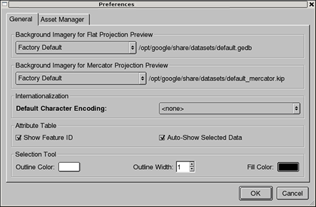
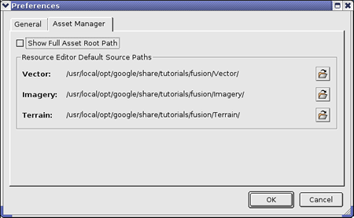
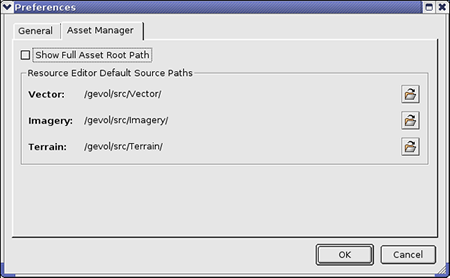
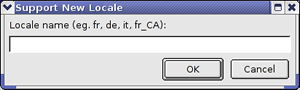
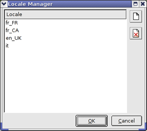
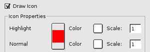
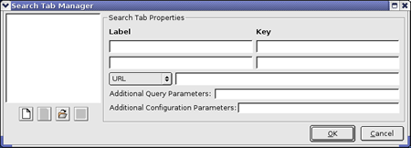
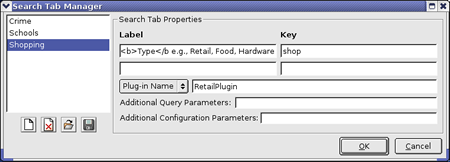

Before you begin importing your source data, it is important to:
If you want to add more subfolders or list options later, you can do so at any time. However, it is more efficient for one person to configure them in advance, resulting in more consistent data in Google Earth EC.
Note: Preference settings are stored for each user. Subfolders and list options are shared by all users of a Google Earth Enterprise Fusion on a particular workstation.
Google Earth Enterprise Fusion allows you to set certain preferences to customize the GUI to your own needs. When you make changes to your preferences, those changes do not affect other users.

On the General tab, you can set the following preferences:
Google Earth Enterprise Fusion is initially configured to refer to the NASA Blue Marble imagery as the default background imagery of the Earth. If you have higher-resolution imagery that you prefer to use as your default background imagery, select an option from the drop-down list (a Google Earth Enterprise Fusion imagery project). If you select Stream Server (HTTP), enter the URL of the desired database.
Note: You cannot add a stream server that requires authentication, including kh.google.com.
If you want to use the Mercator imagery, you can select either the raster or a Mercator imagery project. If you choose a Mercator mimagery project, enter the location of the desired database.
If most of your vector data has a particular character encoding, you can specify that as the default character encoding to avoid having to set the encoding every time. For example, if the majority of your vector data fields have character encoding of type ISO8859-1, select ISO8859-1 from the drop-down list. The default character encoding for vector files is ASCII (plain text) (<none> on the drop-down list).
Note: Google Earth Enterprise Fusion supports bi-directional character encoding. However, right-to-left character encoding and multi-byte character sets are not supported in map layers.
The settings in the Attribute Table section affect the behavior of the Attribute Table.
The feature ID is an internal, unique ID applied to all vector data converted to Google Earth Enterprise Fusion resource format. The IDs are assigned sequentially in the order the features are imported.
You can specify your preference for the outline color, outline width, and fill color of the selection tool. Generally, you set these options based on the overall coloring of your imagery data to make sure the selection tool is visible.

On the Asset Manager tab, you can set the following preferences:
If you prefer to view the full path name of the Google Earth Enterprise Fusion asset root (such as /gevol/assets/) in the Location field of the Asset Manager, check this option. If you do not check this option, the Location field at the top of the Asset Manager shows the path starting with ASSET_ROOT/.
You can specify the default path for each type of source data (vector, imagery, and terrain), if desired. Whenever you add a source file to a resource, the Open dialog opens to the specified folder. If you do not specify a default path here, the Open dialog opens to the folder from which you launched Google Earth Enterprise Fusion.
Note: Initially, these paths are set to the appropriate paths for the Google Earth Enterprise Fusion Tutorial, if you installed the tutorial files. You do not need to change these paths until you start working with your own data. Then change each path to the top-most directory where each type of data is stored.
 next to Vector. The Select Folder dialog appears.
next to Vector. The Select Folder dialog appears.
When you have a plan in place for your folder structure and naming conventions, you can start adding subfolders to the asset root. See Organizing Your Google Earth Enterprise Fusion Subfolders in the Introduction chapter for details about planning and organizing your subfolders.
Caution: Folders and subfolders can not be deleted after they've been created in your asset root. This makes it especially important for you to plan out and organize your subfolders before you or anyone else begins working with data in Google Earth Enterprise Fusion.
Tip: Consider using subfolder names that correspond to the type of resource that you are creating. For instance, you might first create a subfolder named vector to indicate the type of source data. Under the vector folder, you could create additional subfolders to further distinguish the source by provider, if desired, or by some other category. See Organizing Your Google Earth Enterprise Fusion Subfolders in the Introduction chapter for more information.
The new subfolder appears in the asset navigation tree.
Note: If you do not intend to translate your layer names or supply different data for different languages, you can skip this section. You do not need to create a locale in the Locale Manager for your primary locale.
The Locale Manager allows you to set up language support for your users’ locales. If you specify locales here, you can enter layer names in multiple languages. Google Earth EC and Google Maps use the locale setting of the computer to select which language-specific content to display. If you do not specify any locales, all labels in Google Earth EC and Google Maps appear in your native language.
Caution: If you are working with multiple Google Earth Enterprise Fusion users on multiple workstations, it is important to remember that all managers on the Tools menu can be accessed by all users at the same time. If multiple users are working with the same manager at the same time, when one user closes the manager, that user’s changes overwrite all previous data for that manager. So if you are working in a multi-user environment, be sure to coordinate with the other users to be sure that only one user has this manager open at a time.
After you add all of the locales you want to support using the Locale Manager, you can select the locales you want to support for each layer in your project using the Layer Properties dialog. See Configuring Layer Properties in the Defining Projects chapter for more information.


Note: The Label panel has been removed from the Google Earth Enterprise Client as of version 5.0. The Label Manager feature of Google Earth Enterprise Fusion is no longer applicable, and will be removed in a future version.
The Provider Manager allows you to create a list of organizations that provide the data you use in Google Earth. For each provider, you specify a lookup key (any unique abbreviation you choose) and copyright information. When you create a resource, you associate a data provider with it, so that when the resource is displayed in Google Earth EC, it displays the appropriate copyright information.
Caution: If you are working with multiple Google Earth Enterprise Fusion users on multiple workstations, it is important to remember that all managers on the Tools menu can be accessed by all users at the same time. If multiple users are working with the same manager at the same time, when one user closes the manager, that user’s changes overwrite all previous data for that manager. So if you are working in a multi-user environment, be sure to coordinate with the other users to be sure that only one user has this manager open at a time.

Note 1: Changing the copyright text for a provider does not force a rebuild of the affected resources. The old copyright text will be displayed until the resources are rebuilt.
Note 2: If you change a provider’s key, the copyright information associated with that provider can no longer be displayed for associated resources in Google Earth EC.
 . You are prompted to confirm the deletion.
. You are prompted to confirm the deletion. Caution: If you delete a provider, the copyright information associated with that provider can no longer be displayed for associated resources in Google Earth EC.
In addition to the standard icons that are supplied with your installation of Google Earth Enterprise Fusion, you can create, import, and manage your own collection of icons that you can apply to vector data. See Creating Custom Icons in the chapter on Creating Your Own Source Data, Icons, and Masks for details.
Caution: If you are working with multiple Google Earth Enterprise Fusion users on multiple workstations, it is important to remember that all managers on the Tools menu can be accessed by all users at the same time. If multiple users are working with the same manager at the same time, when one user closes the manager, that user’s changes overwrite all previous data for that manager. So if you are working in a multi-user environment, be sure to coordinate with the other users to be sure that only one user has this manager open at a time.
Note: The Icon Manager is empty if you have not yet imported any custom icons. The standard icons provided with Google Earth Enterprise Fusion do not appear in this dialog. You cannot add to or delete from the standard collection.
After you add an icon to your collection, you can use it as a road shield or other marker for vector data, as described in Road Labels and Shields in the Defining Projects chapter.
. A message prompts you to confirm the deletion.
Note: If you delete an icon from the Icon Manager, it does not force you to rebuild projects that reference that icon. If that icon was previously referenced in a project that has already been built, when you publish a database that includes that project, the old icon appears. If something else in that project subsequently triggers a build, the new icon will appear in the resulting version.
If you delete an icon from the Icon Manager that is referenced in a saved but unbuilt project, that project’s build fails. If the Project Editor is open when you delete the icon from the Icon Manager, when you close and then reopen the project editor and look at the Display Rules dialog for the affected layer, a large red box appears instead of the deleted icon.

If you see this red box, you must select a different icon for the affected layer.
If the deleted icon is referenced in a template (that is, you referenced it, saved the template, and then deleted the icon from the Icon Manager), the next time you import that template and try to build the project, the build fails. As in the first case, the next time you open the project and look at the Display Rules dialog for the affected layer, a large red box appears instead of the deleted icon, and you must select a different icon for the affected layer. In addition, it would be a good idea to save a new version of that template that includes an icon in the Icon Manager.
Search tabs allow Google Earth EC or Google Maps users to:
For example, if you have a database of property locations that contains specific information that your users need, you can create a search tab called “Property Search” and configure it to search for locations in your property database, even if that database is stored on another server.
The Search Tab Manager allows you to pre-configure the search tabs to be used for any database you create with Google Earth Enterprise Fusion. You define all of the search tabs you need using the Search Tab Manager, and then you can select up to three of those search tabs for a specific database using the Database Editor. See Adding Search Tabs to a Database in the Defining and Publishing Databases chapter for details.
Caution: If you are working with multiple Google Earth Enterprise Fusion users on multiple workstations, it is important to remember that all managers on the Tools menu can be accessed by all users at the same time. If multiple users are working with the same manager at the same time, when one user closes the manager, that user’s changes overwrite all previous data for that manager. So if you are working in a multi-user environment, be sure to coordinate with the other users to be sure that only one user has this manager open at a time.

Basic HTML tags are supported in the Label text. See the HTML Tags Allowed chapter for details.
The Label value appears above the search field in Google Earth EC. In the example below, the Label value is:
What <font color="#999999>e.g., Computer repair</font>.
The Key value is the name of a search key in your search application. The value the user enters in the corresponding field in Google Earth EC is paired with the key in the search expression that Google Earth EC passes back to your search server in its query URL. For example, in the screen shown above, the key for the first field might be what, and the key for the second field might be where. You must know, however, the exact names of the search keys in your search application.
/opt/google/search/tabs directory:
Coordinates.gestdExample_Plugin.gestdGeocodingFederated.gestdGSA_Plugin.gestdPlaces.gestdAfter you create the search tab, you need to make sure the plug-in is registered. Use the following command to see the registered plug-ins:
geserveradmin --listpluginsSee the Search Framework Developer’s Guide for more information about creating your own plug-ins for search tabs. To get you started, Google provides eight sample plug-ins that are ready to use in the Sample Plug-ins chapter.
To register a plug-in that is not regisitered by default, issue the following command:
/opt/google/geserveradmin --addplugin Plugin_name --jar_path /opt/google/search/plugins/Plugin_name.jar --class com.google.earth.search.plugin.Plugin_name
You can specify the plug-ins the GeocodingFederated plug-in uses in
the GeocodingFederatedPlugin.properties file:
plugins=GEPlacesPlugin,CoordinatePlugin
You can add the plug-in names in the comma separated list for plugins.
The plug-in must be registered or GeocodingFederatedPlugin
will fail to initialize. If you want to add MyPlugin to the
GeocodingFederatedPlugin, for example:
plugins=GEPlacesPlugin,CoordinatePlugin,MyPlugin
To unregister GeocodingFederatedPlugin:
/opt/google/bin/geserveradmin --deleteplugin GeocodingFederatedPlugin
/opt/google/bin/geserveradmin --addplugin MyPlugin
--jar_path /opt/google/search/plugins /MyPlugin.jar
--class com.google.earth.search.plugin.MyPlugin
/opt/google/bin/geserveradmin
--addplugin GeocodingFederatedPlugin
--jar_path /opt/google/search/plugins /GeocodingFederatedPlugin.jar
--class com.google.earth.search.plugin.GeocodingFederatedPlugin
The syntax is key1=value1&key2=value2. For example, sortby=name&numresults=10 sorts by the name field and displays 10 results at a time. Your search application must be able to understand and respond to these key/value pairs, so you must be very familiar with your search application to use this field.
Caution: Any web service, servlet, or web application you configure the search tabs to query must return valid KML to Google Earth EC. For Google Maps, it must return valid JavaScript in the specified structure.

As you add each search tab, it appears on the list. You can view or modify the properties for any search tab by selecting (highlighting) it on the list.
Note: The number of search tabs you add in the Search Tab Manager is unlimited. However, you cannot add more than three search tabs to any particular database.
. The Import Search Tab Definition dialog appears with Google Earth Search Tab Definition selected as the file type.Google Earth Enterprise Fusion saves the file with the .gestd extension. Now you can copy or move that file wherever you want and import the search tab definitions elsewhere.
. You are prompted to confirm the deletion.
Caution: When you delete a search tab definition from the Search Tab Manager, Google Earth Enterprise Fusion does not check to see if any databases are currently using that search tab definition. If you delete a search tab definition that is used in a database that has already been built and published, there is not problem if you delete it. However, if you delete a search tab definition that has been used in a database that has not yet been built, when you try to build that database, Google Earth Enterprise Fusion displays a message informing you that it is unable to find the deleted search tab. You must remove that search tab from the database before you can build it.